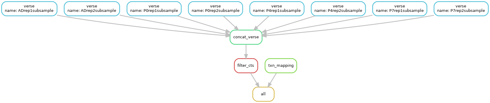

Week 3: RNAseq
After we have aligned our reads, we will now “count” the alignments falling into regions of interest in the mouse genome (exonic regions) and sum the alignments falling into all exons of a given gene to obtain a “gene-level” count of mRNA abundance for all genes in each sample. We will then concatenate all of the 8 outputs from VERSE into a single counts matrix. We will filter this counts matrix and generate a new filtered matrix that will be used for differential expression analysis. Finally, we will get experience with parsing a GTF file and extracting mappings of gene IDs to gene symbols (this will also be used later).
Visualization of this week’s tasks
Below, please see the general directed acyclic graph of the tasks that your snakefile should perform when completed. Your wildcards may be slightly different but your workflow should have the same structure in terms of dependencies. Use this as a visual reference of what jobs / tasks need to be performed in order for the next steps to occur.

As you can see, you will need to run VERSE for each of the 8 samples, represented
in the diagram by the 8 boxes beginning with verse. After all outputs from
VERSE have been produced, you will use a python script and snakemake rule to
concatenate those results together as seen in the concat_verse rule. After
concat_verse has successfully completed, you can then filter the counts matrix
encompassed in the filter_cts rule. Independently, you will also develop a
script and snakemake rule that will parse the gtf file, represented in this diagram
as the txn_mapping rule. You can see that the txn_mapping rule does not depend
on the other rules, it only needs the decompressed GTF file to be present.
Counting the alignments
Now that we have aligned each of our samples to the reference genome, we need to quantify these alignments. This quantification is typically done by “counting” the alignments falling into regions of interest. These regions of interest can vary depending on your goal, but most commonly for RNAseq, we are interested in quantifying the counts of alignments mapping in exonic regions. To obtain gene level counts for a single gene, the counts from all of its exonic regions are summed. VERSE will do this for every gene and generate a single file with two columns: one representing the names / ids of all of the genes in the m39 reference and other column will be the corresponding “gene-level” count for those genes.
- Read the documentation for VERSE and create a snakemake rule that runs VERSE on each of your 8 bam files
- VERSE will require your BAM file and the GTF file that matches the
reference used to build the index. The GTF file was downloaded and decompressed
last week
- Ensure the outputs of VERSE are created in your `results/` directory
- Ensure you specify in VERSE that the alignments were generated from
paired end readsVERSE will generate a counts file (*.exon.txt) for each of your 8 samples. For most downstream applications, we will want this data in the form of a counts matrix, a single file containing all of the counts from each sample.
Generating a counts matrix
We will now concatenate the VERSE output from all 8 samples into a single counts matrix. We are going to describe a strategy that utilizes python scripts and snakemake to accomplish this.
We have provided you with a set of python scripts that utilize argparse to pass
command line arguments directly into the script. You may find a more
in-depth explanation of argparse here.
By separating the actual python code from the snakefile, we will both make our
snakefiles more readable and it will be easier for you to manually troubleshoot
what your script is doing outside of snakemake. When finished, you will use
snakemake to pass the required input and output files that we want created while
directly calling the python script using the shell directive. While you are
developing the code, you can troubleshoot it outside of snakemake by just running
your script python <script_name>.py -i <input> -o <output> as you would any
python script.
- Copy the script,
concat_df.pyfrom /projectnb/bf528/materials/project_1_rnaseq/concat_df.py to your working directory that contains your snakefiles.
First, work directly inside the script itself, and using the pandas library
in python, develop code that will concatenate the counts column from each of the
8 samples into a single matrix (CSV) with a single column for the gene ID. The
column names should correspond to the names of the samples and there should be
a single column containing the gene IDs (these IDs are the same, and in the same
order in every VERSE output file). Below is a sample of what your CSV should
look like:
gene,P0rep1subsample,P0rep2subsample,P4rep1subsample,P4rep2subsample,P7rep1subsample,P7rep2subsample,ADrep1subsample,ADrep2subsample
ENSMUSG00000102693.2,0,0,0,0,0,0,0,0
ENSMUSG00000064842.3,0,0,0,0,0,0,0,0
...Just ensure that your output is correct and that it is structured as a CSV. Your actual values for counts will likely all be 0 since you are generating these from the subsampled data.
When you have successfully developed your code, you will call your script directly from snakemake.
rule concat_df:
input:
verse_files = 'a list of all the outputs from verse'
output:
cts_matrix = 'whatever you want to name your output file'
shell:
'''
python concat_df.py -i {input.verse_files} -o {output.cts_matrix}
'''You can see that by using argparse and snakemake, we can supply the required input files and output files on the command line directly to our script. By keeping these custom scripts separated, we can keep our workflows cleaner and also make it easier to troubleshoot the actual code since we can run it outside of snakemake as we are developing it. We will use this same strategy for the next task.
Mapping gene IDs to gene symbols
There are several ways to map gene IDs to gene symbols (ENSMUSGXXXXX to Actb), including BiomaRt, which you have previously used in BF591. For this project, we will be extracting the mapping of gene IDs to gene symbols directly from the GTF used to build our genome index. Take a look at the first few lines of the GTF that you downloaded earlier.
- Copy the script
parse_gtf.pyfrom /projectnb/bf528/materials/project_1_rnaseq/parse_gtf.py to your working directory that contains your snakefiles.
Develop python code to parse through the lines of a GTF and extract a mapping of gene IDs to gene symbols. Keep in mind the following hints:
You will need to parse through the file line by line, so consider making use of the
open()function and thecsvmodule in python.On lines where the third column (feature_type) is “gene”, extract out the values from column 9 following the strings “gene_id” and “gene_name”. The gene_id will resemble the pattern ENSMUSGXXXXXXXXXXX.X and the gene_name will be a mix of letters and numbers representing genes in a human recognizable format (Htt, p53, Actb, etc.)
Keep in mind that the entire GTF file is not a fully standard CSV. Column 9 contains a set of key:value pairs within the same column. See here for the exact specifications.
Save the paired “gene_id” and “gene_name” values from the same line and write them out to a new delimited file.
To do the actual parsing, you can consider using regular expressions if you are comfortable with them or you can try using a combination of
split()and other string manipulations in python such as slices.
You can see below an example of what the first few lines of this output should look like:
ENSMUSG00000102693.2,4933401J01Rik
ENSMUSG00000064842.3,Gm26206
ENSMUSG00000051951.6,Xkr4
...For the output file, you may choose any commonly used delimiter (commas, tabs, etc.) and you can decide if you wish to have column names. The most important information is the mapping of gene IDs to their associated gene names, which you extracted from each feature in the GTF file.
Once you have successfully developed your code, you will structure your snakemake rule in the same style as you previously did for the rule and script that concatenated the verse outputs together. The only change will be in the input and output files that you need to specify for each different rule.
Filtering our counts matrix
Oftentimes, we will pre-filter our counts matrix to remove genes (rows) that have very few reads. The strategy used for pre-filtering counts will depend entirely on each individual dataset, and you will need to think about which thresholds / filters are appropriate.
You may have noticed that this dataset only has two replicates per timepoint (i.e. ADrep1 and ADrep2). As we discussed in class, there are multiple potential meanings to a count of zero in the context of sequencing experiments. For example, it is possible we did not sequence “deep” enough to detect certain lowly expressed genes. However, it’s also possible that genes with zero counts are truly not expressed in the original samples. In order to mitigate some of this uncertainty, we are going to apply a filter to our counts to simply remove any genes that are not expressed in all of our samples.
Please note that this is a subjective choice and there is not a single correct way of filtering this data. This specific filter was chosen to avoid attempting to perform statistical tests between conditions where we only have one measurement (this filter will only retain genes that are expressed in every sample, ensuring that we have non-zero measurements for all of our samples.
If you remember, we have been working with datafiles that were intentionally filtered to make them much smaller and able to be processed on the head node. For the following steps, you may use this file to test if your code is working as intended, /projectnb/bf528/materials/project_1_rnaseq/test_verse_concat.csv. This CSV contains 2000 rows and after filtering to only keep genes (rows) where all 8 samples have a non-zero value, it should contain 564 rows.
Develop your own python script and name it
filter_cts_mat.pyThis script should take an unfiltered counts matrix as input, filter that matrix according to the conditions above, and output the filtered matrix to a new file.
Keep in mind the following suggestions:
You can copy the argparse arguments from the
parse_gtf.pyscript and simply change the code if you are still getting used toargparse. You will need to change the input and outputs to the unfiltered counts matrix and the name of the new filtered counts matrix you will be creating, respectively.You may use the file listed above to test that your code is working as expected (i.e. only retaining genes (rows) where every sample has a non-zero count). N.B. Use this
test_verse_concat.csvfor testing purposes only! After you have confirmed your code works, remove this file and replace it with the file you generated previously in your snakefile
At the end of week 3, you should have accomplished the following:
- Generated a snakemake rule that runs VERSE on each of the BAM files
- Generated a snakemake rule that calls the provided script, concat_df.py, and concatenates the 8 output files from VERSE into a single counts matrix.
- Generated a snakemake rule that calls the provided script, parse_gtf.py, that produces a delimited .txt file containing the correct mapping of gene IDs to their corresponding gene symbol from the GTF annotation file
- Generated a snakemake rule and a python script named ’filter_cts_mat.py` that filter the counts matrix to only retain genes (rows) where every sample has a non-zero count